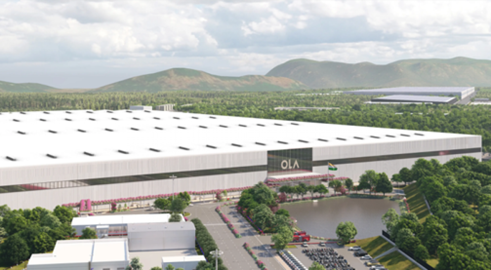
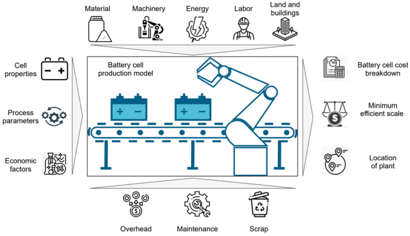

Climate change is a global concern, and countries worldwide are committed to reducing carbon emissions. For India, transitioning to a low-carbon economy presents both challenges and opportunities. Energy storage, particularly through advanced battery manufacturing, plays a crucial role in this transition.
The shift to a low-carbon future requires innovative technology and improved adaptability to climate change impacts. Energy storage will be essential for India to meet its clean energy commitments and improve energy security by reducing oil dependency.
Currently, India heavily relies on imports for Advanced Chemistry Cells (ACCs), which are used in Electric Vehicles (EVs), stationary storage, and consumer electronics. Developing domestic manufacturing capabilities is crucial for reducing this dependence. Let’s understand establishing a giga-scale battery manufacturing sector in India in depth.
Growth of Battery Manufacturing in India
The growth of battery manufacturing in India holds significant promise. The country’s commitment to reducing carbon emissions and transitioning to a low-carbon economy aligns well with global trends and market demands. Establishing a domestic battery manufacturing sector will not only reduce reliance on imports but also create substantial economic opportunities. The government's proactive approach to providing incentives, lowering taxes, and encouraging foreign investments is commendable. However, the success of this initiative hinges on continuous support and collaboration between the government, private sector, and international partners. With the right measures in place, India is poised to become a global hub for battery manufacturing, driving both environmental sustainability and economic growth.
Existing Regulatory and Policy Framework
At the central govt. level, several initiatives support the development of battery manufacturing. The National Mission on Transformative Mobility and Battery Storage focuses on promoting EVs and battery storage solutions. The Faster Adoption and Manufacturing of Hybrid and Electric Vehicles (FAME) scheme aims to promote EV adoption through subsidies and incentives. The Modified Special Incentive Package Scheme (MSIPS) aimed to boost domestic electronics manufacturing but fell short of its targets. At the state level, various policies promote electronics and battery manufacturing, offering incentives to attract investments. Examples of international support highlight successful strategies that India can emulate to bolster its battery manufacturing sector.

Challenges in Setting Up Integrated Cell and Battery Manufacturing Facilities
The primary challenges in setting up integrated cell and battery manufacturing facilities include the high cost of raw materials, technology gaps, and the need for substantial investment in research and development (R&D) and infrastructure. The government must intervene, foster industry collaborations, and incentivize R&D to develop risk mitigation measures.
Proposed Interventions by the Government of India
NITI Aayog's National Mission on Transformative Mobility and Battery Storage aims to establish giga-scale factories in India through various innovative initiatives. The mission will involve multiple ministries, including the Ministry of Road Transport and Highways, the Ministry of Power, the Ministry of New and Renewable Energy, and others. The Phased Manufacturing Programme includes incentives such as output-linked subsidies, tax benefits, and state-level support to attract investments. States will play a crucial role in providing additional incentives to manufacturers, leading to economic growth and job creation. The selection of manufacturers will be based on competitive ranking, with technical and financial bids determining the allocation of manufacturing capacities.
Taxation Recommendations
On the indirect tax side, the government must lower GST rates for battery manufacturing components and reduce customs duties on intermediate goods to encourage domestic manufacturing. Direct tax side interventions include tax holiday benefits, accelerated depreciation, and deductions for capital expenditure to incentivize investments.

Economic Impact of Domestic Cell Manufacturing
Domestic manufacturing will lead to cost savings, increased investments, and job creation. Encouraging foreign direct investment (FDI) will be crucial for technology transfer and scaling up manufacturing capabilities. Increased domestic manufacturing will boost tax revenues through both direct and indirect channels. Establishing energy storage facilities will have a positive multiplier effect on the economy, creating ancillary industries and services. Providing subsidies will help overcome initial challenges and make domestic manufacturing competitive globally.
Project and Financial Assumptions
There is the significant capital investment required for establishing manufacturing facilities, with funding coming from a mix of government support, private investments, and international collaborations. The government must do a detailed cost analysis of various components involved in battery manufacturing and then make a draft of the channels from which this funding can come. The Government should also determine the optimal subsidy levels needed to support the industry.
Conclusion
The transition to a low-carbon future is imperative for India, and developing a robust domestic battery manufacturing sector is a critical step in this journey. With strategic government interventions, industry collaborations, and a focus on R&D, India can overcome the challenges and leverage the opportunities presented by this transition.